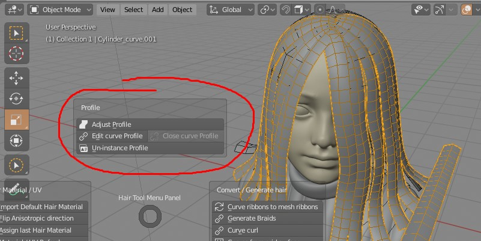

Adding/Adjusting curve profile¶

To add or edit curve profile, press 'Add (Adjust) Profile' button located in top pie menu (ctrl+shfit+H by default). There are some settings under 'F9' hotkey like:
- changing strand width
- chaning resolution along curvs, and perpendicualar to curve direction
- offseting curve upp or down from center - 'Strand Uplift'
- making profile round or flat with 'Strand protrusion' parameter
Edit curve profile¶
This option will let you edit curve profile directly, by linking curve bevel object to scene end going into edit mode.
Un-instance profile¶
If multiple hair objects are using same bevel curve profile, this option will uninstance bevel profile object on selected object.